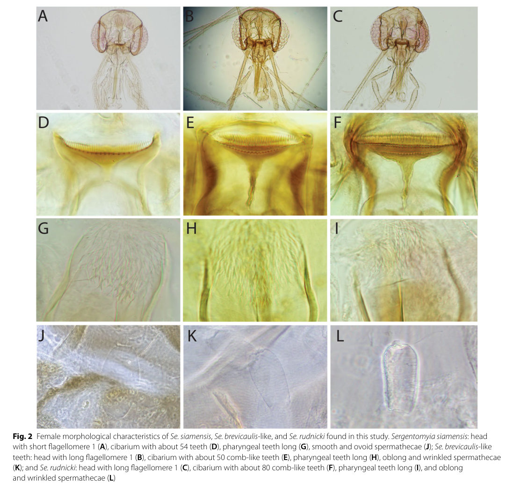
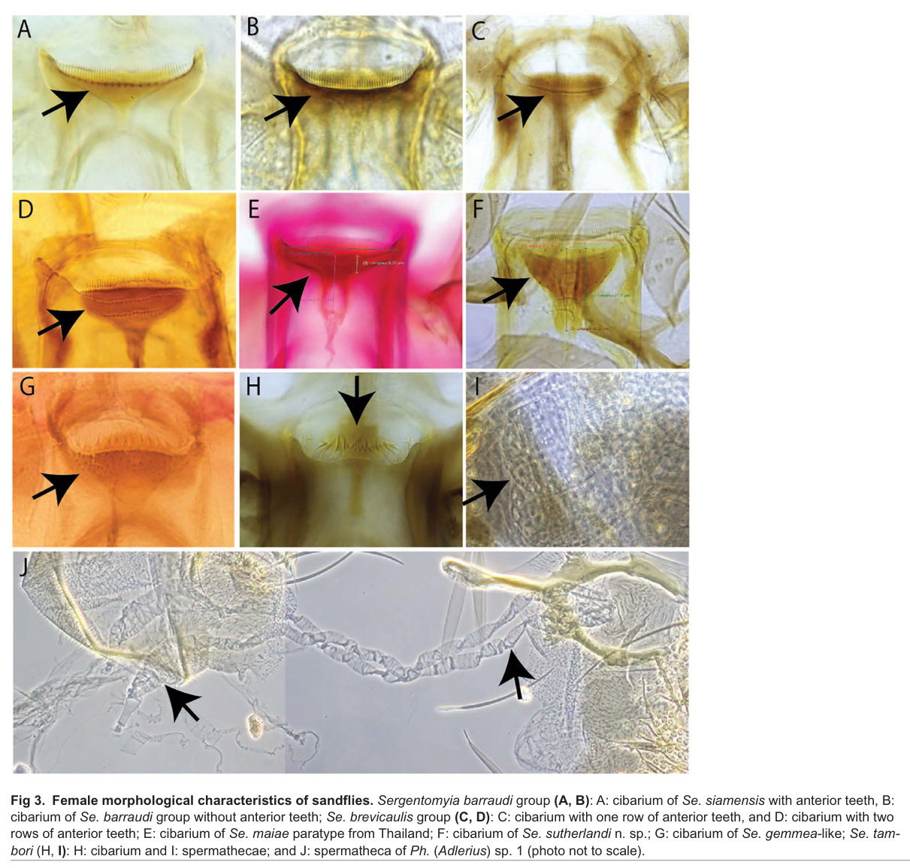

Species › Sergentomyia › Parrotomyia
Sergentomyia brevicaulis
| Classification | Genus Sergentomyia, subgenus Parrotomyia |
|---|---|
| Status | valid |
| Other names in keys | Sergentomyia brevicaulis group |
| Distribution | Records in the project regions: Laos, Thailand, Vietnam (Galati et al. 2025) | Laos, as 'Se. brevicaulis-like' (Vongphayloth et al. 2024) | Laos: Luangnamtha, Vientiane province (Vongphayloth et al. 2026, Table 2) |
| Thailand | Thailand (Galati et al. 2025) | listed in the 42-species Thai checklist (Soe et al. 2026, Table 3) | Nakhon Si Thammarat and Satun caves: 7 females, 7 males (Klaiklueng et al. 2025, Tables 1-3) |
| Diagnostic notes | Galati et al. 2025 (pp. 35-36) list it as Sergentomyia brevicaulis (Quate, 1962) (Sergentomyia incertae sedis). | 'Se. brevicaulis-like' from Laos: long f1 beyond tip of proboscis and about 50 comb-like cibarial teeth as in the original description, but long pharyngeal teeth as in Se. rudnicki; status unresolved (Vongphayloth et al. 2024). | Original description (Quate): about 50 comb-like posterior cibarial teeth, one row of anterior teeth, f1 long, extending beyond the proboscis tip. Lao females: 47-64 posterior teeth and one or two rows of 17-26 anterior teeth; cyt-b distance to Lao Se. rudnicki only 1.4%, so the two may be varieties of one species (Vongphayloth et al. 2026). Separated from the S. barraudi group by longer f1 and by the sclerotized area not forked anteriorly. | First cox1 and cytb barcodes (no earlier GenBank sequences); Thai sequences form a well-supported group (Klaiklueng et al. 2025). |
| Sources | Lewis 1978, Quate 1962, Galati et al. 2025, Soe et al. 2026, Vongphayloth et al. 2024, Vongphayloth et al. 2026, Klaiklueng et al. 2025 |
⚠ Conflicting characters
| Character | Source A | Source B | Type | Comment |
|---|---|---|---|---|
| Subgenus | Lewis 1978: Parrotomyia | Galati et al. 2025: Sergentomyia incertae sedis (pp. 35-36) | different interpretation | |
| Species limits / cibarium (♀) | Lewis 1978: Two species: S. rudnicki ~90 hind teeth, two rows of about 22 fore teeth (couplet 81b); S. brevicaulis separated at 82b | Vongphayloth et al. 2026: Lao S. brevicaulis 47-64 posterior teeth, one or two rows of 17-26 anterior teeth; cyt-b distance to Lao S. rudnicki 1.4%; 'could be varieties of each other' | different interpretation | Authors call for comparison with type material from Vietnam and Malaysia. Both names kept. |
How it keys out
The chain of characters leading to this taxon in each key (a ready-made diagnosis).
Oriental Phlebotominae: species and subspecies (Lewis 1978) – couplet 82b
- 1b Cibarial teeth in a transverse row (Fig. 65), fore teeth sometimes present (Figs 136, 245) and usually pointing upward. Pigment patch (Figs 66, 136) usually present. Hind ends of abdominal tergites 2-6 usually with all or most hairs recumbent, most sockets much smaller than on 1 except in S. musai. Style of ♂ with four major spines and an accessory seta (Fig. 80) ⚠
- 48b Abdominal tergites 2-6 with few or no erect hairs
- 49b Abdominal tergites 2-6 usually with no erect hairs. Spermatheca not segmented but sometimes striated or wrinkled
- 63b Spermatheca elongate and usually without spicules
- 64b Without this combination. Spermatheca usually not tubular
- 69a Cibarial armature usually a comb-like row of parallel teeth with short points. Pharynx often lamp-glass-shaped. R2/R2+3 often 0.3-1.0 (in some Palaearctic species). Spermatheca a smooth, round or elliptical, capsule. Aedeagus slender, triangular and narrowing gradually, usually to a sharp point. Paramere hooked. Style with all or two of four spines terminal
- 70a Female
- 71a Pharynx with many distinct pointed teeth
- 72b Cibarium without notch in hind end of ventral plate
- 75b Spermatheca not nearly spherical
- 76b Without this combination
- 77b Without this combination
- 78a Cibarium with 64 teeth or more
- 79b Pharyngeal teeth not long
- 82b Hind margin of pigment patch convex. (South Vietnam) ⚠
Oriental Phlebotominae: species and subspecies (Lewis 1978) – couplet 99a
- 1b Cibarial teeth in a transverse row (Fig. 65), fore teeth sometimes present (Figs 136, 245) and usually pointing upward. Pigment patch (Figs 66, 136) usually present. Hind ends of abdominal tergites 2-6 usually with all or most hairs recumbent, most sockets much smaller than on 1 except in S. musai. Style of ♂ with four major spines and an accessory seta (Fig. 80) ⚠
- 48b Abdominal tergites 2-6 with few or no erect hairs
- 49b Abdominal tergites 2-6 usually with no erect hairs. Spermatheca not segmented but sometimes striated or wrinkled
- 63b Spermatheca elongate and usually without spicules
- 64b Without this combination. Spermatheca usually not tubular
- 69a Cibarial armature usually a comb-like row of parallel teeth with short points. Pharynx often lamp-glass-shaped. R2/R2+3 often 0.3-1.0 (in some Palaearctic species). Spermatheca a smooth, round or elliptical, capsule. Aedeagus slender, triangular and narrowing gradually, usually to a sharp point. Paramere hooked. Style with all or two of four spines terminal
- 70b Male
- 94a Tip of aedeagus pointed
- 95b Style with two of spines subapical
- 98b Cibarium with about 19 or 20 hind teeth
- 99a Cibarium with two rows of fore teeth and a long narrow pigment patch ⚠
Indo-Chinese species (Thailand to Viet Nam) (Quate 1962) – couplet 4b
- 1b Abdominal hairs on tergites 2 to 6 recumbent, sockets much smaller than on tergite 1; palpal segment 4 longer than 1/2 length of 3; ♂ dististyle with all spines distad of center (except sylvestris and khawi); pharynx armed or unarmed; cibarium of ♀ usually with well developed teeth ⚠
- 4b R2+3 much shorter, less than 1/2 length of R2; delta at least 3/4 length of R2; ♀ pharynx armed, ♂ unarmed; ♀ cibarium with row of fine, numerous teeth, pigment patch well sclerotized and top-shaped; ♂ cibarium with fewer and smaller teeth and pigment patch slender, carrot-shaped ⚠
Laos karst (Vientiane): females (Vongphayloth et al. 2024) – couplet 15b
- 1a Five radial veins on the wing
- 2a The longest palpal segment is the distal one (p5)
- 3b Abdominal tergites 2–6 with recumbent hairs ⚠
- 9b Presence of a cibarial sclerotized area ⚠
- 10b Well-developed sclerotized area
- 11a Two ascoids on flagellomere 1
- 12a Presence of several cibarial teeth
- 13a Presence of numerous comb-like cibarial teeth
- 14b Non-furcated proximal part of the sclerotized area
- 15b From 45 to 65 cibarial teeth ⚠
Figures



